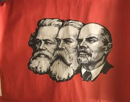

Primeiro ano do ensino médio - 2022
O meu primeiro ano, não só no ensino médio, mas no Morelli, foi provavelmente o ano mais impactante para mim, nele foi onde eu comecei a ser e querer muito do que sou hoje, foi um ano bem difícil pra mim, minha vida pessoal estava um completo caos, e eu estava tentando me livrar desses problemas ainda, e isso acabava afetando minha vida na escola, logo no meu primeiro dia de aula eu tive uma crise de ansiedade e acabei voltando para casa, não é o melhor jeito de começar o ano letivo.
Apesar do início ruim, eu tinha que ir para o colégio, não dava para simplesmente largar de novo, então eu fui. Não conhecia absolutamente ninguém na minha sala, e fiquei sozinho no início, embora eu não me importasse de ficar sozinho, tinha muito trabalho em grupo, então não conhecer ninguém me colocava em desvantagem nessas horas, e acabava me deixando em uma situação bem desconfortável, mas uma garota cujo nome é Sophia acabou me chamando pra fazer um trabalho em grupo com ela, acho que ela reparou que eu sempre ficava sozinho e acabou fazendo isso. Apesar de nunca ter chegado a ser próximo dela, sou grato pelo pontapé inicial que ela deu por mim. Mais tarde eu acabei encontrando um grupo definitivo, em um trabalho em grupo, Yasmim e eu estávamos no mesmo grupo, e ela, sem um pingo de receio, me pergunta se eu era gay (por que eu aparentava ser, diz ela), eu respondi que era PAM, e ela também diz ser, que coincidência que foi viu, mas aí papum, viramos amigos e a gente tá aqui até hoje (apesar de tudo).
Eu em Nárnia
Ideologias Políticas e Sociais
Junto da amizade com a Yasmim e uma outra coisa que citarei mais para frente, minhas ideologias foram a principal coisa que eu desenvolvi na primeira série, e foi graças (não somente a ele, mas principalmente) ao professor Vitor (o calvo), que me dava aula de Geografia. Foi graças a ele que eu fui pela primeira vez atrás de descobrir o que era o bendito comunismo, bom, eu descobri, e ainda gostei! Eu já não gostava do capitalismo devido a vários fatores que não vou entrar em detalhes, pois são coisas pequenas como ser o principal causador da fome e desigualdade social (contém ironia). Aí encontrei o comunismo, anarquismo e algumas outras coisas que eram opositoras ao sistema capitalista. Nisso, comecei a estudar muito História, Geografia, Geopolítica, Sociologia e Filosofia, fazendo com que eu melhorasse (ao meu ver) a minha visão sobre o mundo, sobre o certo e o errado, sobre o que eu acreditava, ou não.
Alguns dos livros incriveis que acabem indo atrás de ler por causa disso
Almejando uma carreira profissional e criando um rumo(ou tentando)
Este espaço foi criado para que eu possa finalizar sobre o primeiro ano, esse é o terceiro e ultimo tópico mais importante para mim sobre este ano. Foi neste ano em que eu decidi ser programador, com a introdição de pensamento computacional nas escolas, eu tive acesso a isso pela primeira vez, e quem me dava aula era o professor Alexandre, no começo eu não estava demonstrando isso, então estudava em casa, e mais tarde vim a deixar claro, que eu de fato queria isso, o meu professor na época, o Alexandre não era um cara que entendia muito sobre programar, afinal ele estava aprendendo junto conosco(as escolas era desiguais e a maioria não estava aparta de fato para ter esta matéria), mas apesar de não entender muito ele era, e ainda é um cara bem dedicado aos estudos, então eu acabei progredindo por que me sentia motivado por ele a continuar programando.
Vou deixar aqui o meu primeor site feito em HTML5 e CSS3.
Meu primeiro site
Definitivamente é um site muito feio, um site que tem partes muito mais trabalhadas do que outras quebrando o equilibrio, um site que foi gravado e salvo de forma porca, mas é meu primeiro site, e eu gosto de ter ele aqui, ele ser para que eu possa ver o quanto eu evolui!
Segundo ano do ensino médio - 2023
O meu segundo ano do ensino médio não foi o mais interessante, mas eu consegui aprimorar muito do que eu fui introduzido no primeiro ano, tendo aulas de Sociologia com o professor João Sopa eu consegui melhorar meus conhecimentos relacionados á Sociologia(óbviamente), também foi neste ano em que eu impulsionei meus estudos, leitura de livros? nossa eu gastava meu salario nisso praticamente, então creio que teve uma grande importância, apesar de ausencia de registros visuais.
A coisa mais interessante que eu fiz no segundo ano do ensino médio foi provavelmente o Trabalho Unificado de Empreendedorismo e Química, da professora Ciele e Simone, que no meu caso, criei junto do meu grupo um jogo de cartas que foi jogado por alguns mêses na ausência do que fazer.
Famoso Terceirão - 2024

Primeira impressão
A primeira coisa que me chamou atenção de maneira positiva neste ano, foi sem sombra de duvidas a professora mariana, que me da aula de saúde e bem estar, provavelmente a minha professora predileta neste terceiro ano, adoro as aulas dela, e gosto muito dela também, um fato muito curioso é que ela é esposa de um dos meus professores prediletos também, o Vitor!
Meu “ultimo“ site
Tendo ele aqui para comparar com o primeiro, vejo muito evolução, e vendo neste exato momento vejo muito mais coisa parar melhorar, e isto é bom, significa que consegui evoluir, enfim, é o meu principal site feito para questões acadêmicas este ano, e estou satisfeito!
Galeria de fotos
Acho que duas palavras que cabem bem aqui são Conflito e Diversão, o tanto de conflito que eu (principalmente gente proxima) arrumou não é brincadeira, mas fora isso, teve muita coisa legal, eu socizalizei horrores, coisa muito incomum da minha parte, e acabei me empolgando por isso, mas percebi e no final vou tentar resolver, aprendi a jogar truco, então gastei mt tempo gritando e batendo na mesa(mt bom), sai pra jogar bola com os mlk, fazia papo de 9 anos que n jogava bola(acho que eles notaram), fiz trabalhos mirabolantes da ciele, e até um de programação que foi para o agrinho e me fez vencer a fase regional(mesmo que não valha tanto, já que mesmo assim não ganhei nada), ganhei um pendrive e um caneta do Buiu, simples mas útil e prático, também tenho que citar que na área de programação acaba que não me ajuda tanto, mas ele é legal e motiva bastante, então mesmo não me ajudando nos códigos, ele me ajudou muito a ganhar o concurso apenas motivando, também fez um discurso legal pra mim no dia que recebi a noticia da vitória(não tão vitoriosa assim), de resto, fiquem com as imagens!